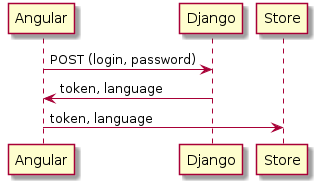

Authentification process¶
Login¶

Authorization form auth/login/login.component.ts
login(){
this.login_service.login({'username': this.user.username, 'password': this.user.password});
}
Applies Django account.views.auth.CustomAuthToken view.
Service login_service.
Get token, language from the server by POST request and save it into the local storage.
Login dispathes 2 actions.
this.session_store.dispatch(new sessionActions.LogIn(data));
this.session_store.dispatch(new sessionActions.SetSid({
token: data.token,
socket_id: user.socket_id,
}));
LogIn
Calls reducer.
case Actions.ActionTypes.LogIn:
return {
...state,
token: action.payload.token,
sid: action.payload.sid,
is_auth: true,
user: action.payload.user
};
SetSid
Calls reducer.
..code:
case Actions.ActionTypes.SetSID:
return {
...state,
sid: action.payload
};
Calls effect.
@Effect()
updateSocketId$ = this.actions$.pipe(
ofType(sessionActions.ActionTypes.SetSID),
switchMap((action: any) => {
return this.service
.updateSocketId(action.payload).pipe(
map((room: any) => new sessionActions.SidDone())
);
})
);
updateSocketId service
Calls Django online.views.UpdateSocketIdView.
It creates a new record in UserOnline or update an old.
try:
uo = UserOnline.objects.get(token=token,agent=agent)
uo.sid = socket_id
uo.save()
except Exception as e:
print('Can not update socket ID %s %s create a new one' % (socket_id, e))
uo = UserOnline()
uo.sid = socket_id
uo.token = token
uo.agent = agent
uo.user = request.user
uo.save()
Logout¶
public logout() {
this.http.get(`${environment.apiUrl}/logout/`).subscribe(data => {
this.session_service.removeToken();
this.socket_service.reconnect();
this.session_store.dispatch(new sessionActions.LogOut());
this.router.navigate(['/login']);
window.location.reload();
});
}
his.socket_service.reconnect - create a new socket connection with new ID.
sessionActions.LogOut
Clears session storage.
case Actions.ActionTypes.LogOut:
return {
...state,
token: '',
is_auth: false,
user: {}
};
Initialization service.¶
Refreshing or first loading page.
Intersepted into APP_INITIALIZER of the Angular project.
export function init_app(initService: InitService) {
return () => initService.init();
}
....
{
provide: APP_INITIALIZER,
useFactory: init_app,
deps: [InitService],
multi: true
},
public init() {
this.http.get(`${this.app_config.APIurl}/init`).subscribe(
(data: any) => {
/// set session user
this.session_store.dispatch(new sessionActions.Init(data));
// set online users
this.user_state.dispatch(new UpdateUsers(data.users_online));
},
err => {
this.token_service.removeToken();
}
);
}
UpdateUsers acton
Gets list of users objects.
Action.
export class UpdateUsers implements Action {
readonly type = UserActionTypes.UpdateUsers;
constructor(public payload: { [id: number]: User }) {}
}
Reducer.
Checks if user.id not exists in array ids to add a new ones.
case UserActionTypes.UpdateUsers:
const oldids = [...state.ids];
const arrUsers = Object.keys(action.payload)
.reduce((acc, val) => {
acc.push(action.payload[val].id);
return acc;
}, []);
arrUsers.forEach((value) => {
if (oldids.indexOf(value) === -1) {
oldids.push(value);
}
});
return {
...state,
ids: oldids,
results: Object.assign({}, state.results, action.payload)
};
TODO(front):(1) Make it more elegant way using adapter.
For example.
import { EntityState, EntityAdapter, createEntityAdapter, Update } from '@ngrx/entity';
export const adapter: EntityAdapter<LogModel> = createEntityAdapter<LogModel>();
...
case LogActionTypes.LogCreated: return adapter.addOne(action.payload.log, {
...state, lastCreatedVideoId: action.payload.log.id
});
export class UpdateUsers implements Action {
readonly type = UserActionTypes.UpdateUsers;
constructor(public payload: { [id: number]: User }) {}
}
sessionActions.Init
TODO(front):(3) Make it using effect.
Getting session info from server.
Django view.
Initialization request.
{ ‘status’: 0, ‘message’: ‘Ok’, ‘token’: token.key, ‘languges’: lng, ‘user’: user_serializer(request.user.userprofile), ‘users_online’: uo, ‘online_cnt’: number }
def get(self, request, format=None):
try:
token = Token.objects.get(user=request.user)
if request.user.userprofile.gender=='male':
uonline = UserProfile.objects.filter(gender='female',is_online=True)
else:
uonline = UserProfile.objects.filter(gender='male',is_online=True)
uo = {}
for u in uonline:
uo[u.id] = user_serializer(u)
lng = []
for l in LANGUAGES:
lng.append({'id': l[0], 'name': l[1]})
return Response({
'status': 0,
'message': 'Ok',
'token': token.key,
'languges': lng,
'user': ShortUserSerializer(request.user.userprofile).data,
'users_online': uo,
'online': len(uo)
})
except:
return Response({'status': 1, 'message': 'no authorized!'}
TODO(back):(3) Use ShortUserSerializer
Reducer.
case Actions.ActionTypes.Init:
return {
...state,
user: action.payload.user,
is_auth: true,
online: action.payload.online,
token: action.payload.token
};
Socket service¶
Initialisation.
this.socket.on('connect', () => {
this.session_service.setSid(socket.ioSocket.id);
console.log('connnection update sid' + socket.ioSocket.id);
this.session_store.dispatch(
new sessionActions.SetSid({
token: this.session_service.getToken(),
socket_id: socket.ioSocket.id,
}),
);
});
Create a net session ID and calls SetSid action to sent it to the server.